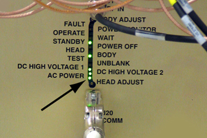

Illustration 4: AC Power LED

| NOTE: | Activation of the Emergency Stop Button for the PGR cabinet will remove the high voltage from the gradient power supply and the RF Amplifier. However, be aware that the PDU voltage will stay enabled in the PGR cabinet after the Emergency Stop Button is pressed. |